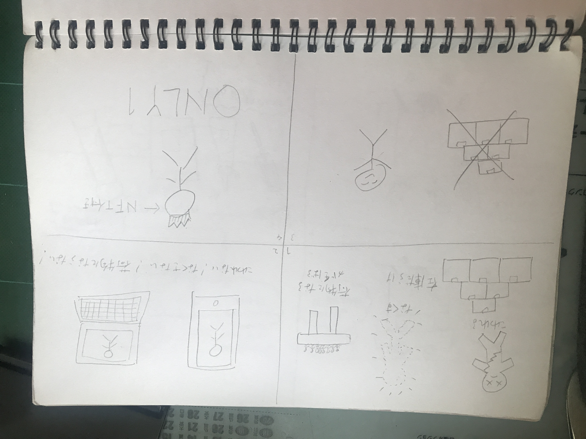

私が夏休みの間世の中を観察し、見つけた課題は、「グッズのデジタル化」である。
自分も含め、現代の人間は、音楽や芸術、アイドル、漫画、アニメ、ゲームなど様々なジャンルに「推し」がいることが当たり前になっているが、
その推しのグッズを買いすぎて、飾るスペースがないこと、壊れるリスクがあること、持ち歩く際に荷物になるなど
グッズを集めるデメリットがある。また、グッズを販売する推し側も、在庫問題などに悩まされることが少なくなく、
両者にとっていいこと詰めとは言えない。そこで、今回、考えたのが、デジタルグッズである。

デジタルグッズにすることで、無くすことも壊れることも家でスペースを取ることも外に持って行く際に荷物になることもなく、
販売側としても、在庫を気にせずに気軽にグッズを販売できる。
さらに、グッズをブロックチェーンを応用したNFTにすることで、ただの大量生産された中の一つではなく、
あなたしか持っていない世界に一つだけの推しのグッズを手にすることも可能である。